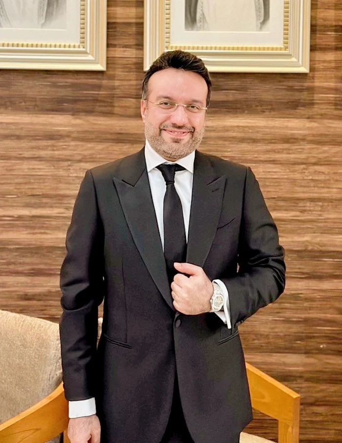

The early years in Iran
Farzin began as a young musician and sound engineer in Isfahan, where he pioneered one of Iran’s early digital recording studios.
INDEPENDENT RECORDING STUDIO · DUBAI
Music Producer, Sound Engineer & Founder of 3F Music Dubai – Over 100 Albums in the Persian Music Industry.
ABOUT FARZIN
Farzin began as a young musician and sound engineer in Isfahan, where he pioneered one of Iran’s early digital recording studios.
He relocated to the United Arab Emirates in 2004 and founded 3F Music, taking the studio’s name from his initials.
Across recording, arrangement, mixing and mastering, his approach brings traditional Persian melodies into contemporary production.
SELECTED COLLABORATIONS
Explore six collaborations from a career spanning over 100 albums. Each card plays an original instrumental demo. The credits shown are examples.
3F MUSIC STUDIO · DUBAI
A recording and production space for Persian and international artists, pairing carefully tuned acoustics with analog gear and digital workflows.
CONTACT & BOOKINGS
For artists, managers and labels. Tell us what you’re working on and what you need from the studio.
info@3fmusic.com ↗